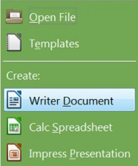

Your documents will never look as good as when they're made with LibreOffice. You can choose and apply fonts that are on your computer, set and customize styles for pretty much every part of your document..
Pre-requisites
LibreOffice 4.3
Steps
Open LibreOffice 4.3
Click on "Create: Writer Document" in the left hand menu.

Customize your document using preloaded features in Writer
When finished with your document under the file menu select "Save As" and choose you destination.